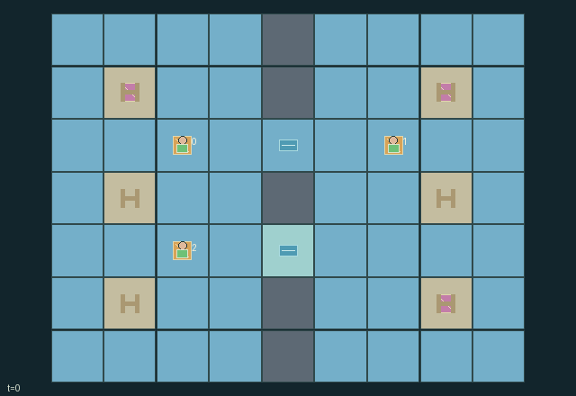

GI141 · Lantern Strait

Original recording scope: 角色视角 · Mode: 固定脚本演示
Additional generated state replay (different trajectory / full-state debug)

Deliver each vessel's parcel to its private berth on the opposite bank. Own completion pays 0.75 plus a public 0.25 per completion to every role, creating both urgency and shared benefit.
Identity and original contract
3 independently actionable roles; 9 discrete commands per role; 168 native observation columns per role; original horizon 80 steps. Declared per-step reward range: -1 to 2. Observation regime: partially_observable.
Source SHA-256: c35f23acaeac5fd11c09e8fe9300c678941be158c5f940cb24f2a330c6321b62
The objective, rewards, population, map and horizon remain original. A preview is not a success claim.
Objective and gameplay
Deliver each vessel's parcel to its private berth on the opposite bank. Own completion pays 0.75 plus a public 0.25 per completion to every role, creating both urgency and shared benefit.
Public directional requests allocate short exclusive entrance leases before simultaneous movement. Traffic can block, reserve, yield or strand others. The lower crossing closes for half of each eight-step tide cycle; one-vessel berths retain service occupancy for two steps.
- Upper crossing (4,2) is always open; lower crossing (4,4) is open at tide phases 0..3 and closed at phases 4..7.
- Adjacent EAST/WEST requests set public lanterns and seek a three-step entrance lease. Matching side and rotating initiative decide conflicts before movement.
- Unreserved entrances are open to either direction. A lease excludes other entrants; YIELD releases it and departure from the gate also releases it.
- Maneuvers and signals each spend one fuel, including blocked attempts. A grounded vessel must wait for the tide; exhausted vessels remain physical obstacles.
- Only own destination is private. Docking exactly there starts two later steps of service; completed vessels depart and release their berth.
- Own completion is worth 0.75 plus 0.25 shared per completion; working cost is 1/64 per step, collision cost 1/8, new stranding cost 1/2.
Ending: All three vessels are resolved (delivered or fuel-stranded), or the 80-step horizon truncates. Service lasts two later transitions. A natural resolution at H has priority.
What this game explores
Information, sensing & communication: Who knows a fact, when it was measured, and whether it was communicated are separate state variables. Test memory or communication using only the same role-visible evidence.
Commitment, exchange & governance: Promises consume time, liquidity, access or material. Separate an announced agreement from a binding commitment and from its eventual delivery; log cancellation and expiry too.
Joint transport & shared access: Positions, load geometry, occupancy and persistent access constrain whose action can succeed next. Distinguish physical handoff, shared controls and simultaneous force from a cosmetic cooperation label.
These are questions supported by rule structure, not observed learning effects.
Play it: operating walkthrough
crucibles play --game gi141Keep Python running and open its printed address. Select this game, set a seed and press Create session. The game itself is always English.
Assign a role range to Host with Assign / take over, or Assign all roles. Invite a second participant with Create player invitation, then assign a disjoint subset. Every original role is available.
For every owned role choose a legal command and press Queue. Arrow keys / WASD queue a declared directional action for the current role camera when available. Space or Advance one joint step advances everyone together. Non-directional games use the selectors.
Unqueued roles use the labelled untrained uniform-legal policy. Take over or release roles before the next step without resetting. Full-state debug is privileged and permanently logged; role cameras preserve permissions. Close the session to retain logs. Server restart does not restore sessions.
Complete command reference
IDs and English labels exactly match the manifest. Availability depends on role, resources, location and phase. An available action can still have no productive effect.
0·Wait or remain in service
1·Attempt northward maneuver
2·Attempt eastward maneuver
3·Attempt southward maneuver
4·Attempt westward maneuver
5·Broadcast EAST and request an adjacent eastbound passage
6·Broadcast WEST and request an adjacent westbound passage
7·Broadcast YIELD and release own reservation
8·Start service at own private destination berth
Roles and capability identifiers
These original role names describe capabilities, not interchangeable skins. Check each owned role's legal selector before planning handoffs.
agent_0·eastbound vessel with private berth
agent_1·westbound vessel with private berth
agent_2·eastbound vessel with private berth
Information and observation permissions
All vessel positions, fuel, lantern signals, cargo status, passage reservations, tide, berth occupancy and event flags are public radar data. Only own destination id/position is returned; destination entities have identity visibility. Other private destinations are never displayed in role views. Waiting/servicing/finished/stranded roles retain no-op; only active fueled vessels can issue other commands.
The GIF is full-state debug and may reveal hidden entities or private state. Train on obs[agent], not the picture, state tree or another role's private row. Field slices and visibility are in the original manifest.
Reinforcement-learning integration
import jax
from crucibles_jaxmarl import make
env = make("gi141")
key = jax.random.PRNGKey(0)
key, rk, ak, sk = jax.random.split(key, 4)
obs, state = jax.jit(env.reset)(rk)
actions = env.sample_actions(ak, state)
obs, state, rewards, dones, info = jax.jit(env.step_env)(sk, state, actions)
done = dones["__all__"]Observations are float32 vectors of width 168; actions are scalar int32; masks have 9 entries. Supply all 3 roles each transition. Masked sampling is an engineering reference, not a trained learner.
step_env retains terminal data without reset. step performs outer autoreset and keeps terminal data in info["raw_state"] and info["raw_observation"]. Use dones["__all__"] for episode boundaries; separate completion, failure and time limit in analysis.
JIT or vmap equal identities and shapes. Split independent reset, policy and transition keys. Group different shapes explicitly; do not shrink the population or horizon. Host rendering stays outside training.
Training questions and fair evaluation
Define valid completion from the objective before fitting. Preserve original rewards and also report real deliveries/services, losses, resource state, unresolved episodes and per-role returns. Animation is not a reward signal.
Who knows a fact, when it was measured, and whether it was communicated are separate state variables. Test memory or communication using only the same role-visible evidence.
Promises consume time, liquidity, access or material. Separate an announced agreement from a binding commitment and from its eventual delivery; log cancellation and expiry too.
Positions, load geometry, occupancy and persistent access constrain whose action can succeed next. Distinguish physical handoff, shared controls and simultaneous force from a cosmetic cooperation label.
Compare memory, communication or centralized critics under matched actor information. Declare critic access; keep actor inputs role-filtered. Match partner/opponent distributions, masks, compute and checkpoint selection. Final tests never enter fitting or selection.
Independent training runs or source-pairing blocks are inferential units; episodes from one policy are not independent training replications. Save hashes, keys, versions, device, time and cost. Negative, zero, failed and indeterminate outcomes are valid. No trained checkpoint or target score is supplied.
Classification and evidence
Overlapping editorial labels are reading aids, not proof of novelty, difficulty, strategic equivalence or learning effects.
- Information, sensing & communication
- Evidence
manifest.task.objective: Deliver each vessel's parcel to its private berth on the opposite bank. Own completion pays 0.75 plus a public 0.25 per completion to every role, creating both urgency and shared benefit.
- Evidence
manifest.task.observation_access: All vessel positions, fuel, lantern signals, cargo status, passage reservations, tide, berth occupancy and event flags are public radar data. Only own destination id/position is returned; destination entities have identity visibility. Other private destinations are never displayed in role views. Waiting/servicing/finished/stranded roles retain no-op; only active fueled vessels can issue other commands.
- Evidence
manifest.actions.5: Broadcast EAST and request an adjacent eastbound passage
- Commitment, exchange & governance
- Evidence
manifest.task.interaction: Public directional requests allocate short exclusive entrance leases before simultaneous movement. Traffic can block, reserve, yield or strand others. The lower crossing closes for half of each eight-step tide cycle; one-vessel berths retain service occupancy for two steps.
- Evidence
manifest.task.observation_access: All vessel positions, fuel, lantern signals, cargo status, passage reservations, tide, berth occupancy and event flags are public radar data. Only own destination id/position is returned; destination entities have identity visibility. Other private destinations are never displayed in role views. Waiting/servicing/finished/stranded roles retain no-op; only active fueled vessels can issue other commands.
- Evidence
manifest.actions.7: Broadcast YIELD and release own reservation
- Joint transport & shared access
- Evidence
manifest.task.objective: Deliver each vessel's parcel to its private berth on the opposite bank. Own completion pays 0.75 plus a public 0.25 per completion to every role, creating both urgency and shared benefit.
- Evidence
manifest.task.observation_access: All vessel positions, fuel, lantern signals, cargo status, passage reservations, tide, berth occupancy and event flags are public radar data. Only own destination id/position is returned; destination entities have identity visibility. Other private destinations are never displayed in role views. Waiting/servicing/finished/stranded roles retain no-op; only active fueled vessels can issue other commands.
- Evidence
scene.rules.2: Unreserved entrances are open to either direction. A lease excludes other entrants; YIELD releases it and departure from the gate also releases it.
Source, receipts and preview limits
The additional generated state GIF replays saved untrained legal actions through the original kernel. At most 25 actual endpoints include initial and terminal state; no invented interpolation. It is full-state debug, not the role observation. Where an original scene preview exists, it is displayed first with its own recorded information scope. The two recordings may use different trajectories and views.
Original source, observation slices, manifest and mechanism
Native receipt · Presentation receipt
Engineering passes do not establish learning. Nonzero floating differences remain recorded and undetermined; no new tolerance was introduced. Human scores remain unverified.